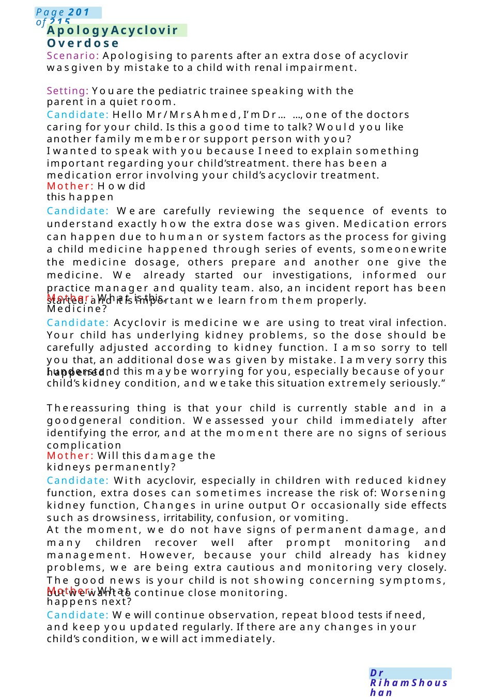
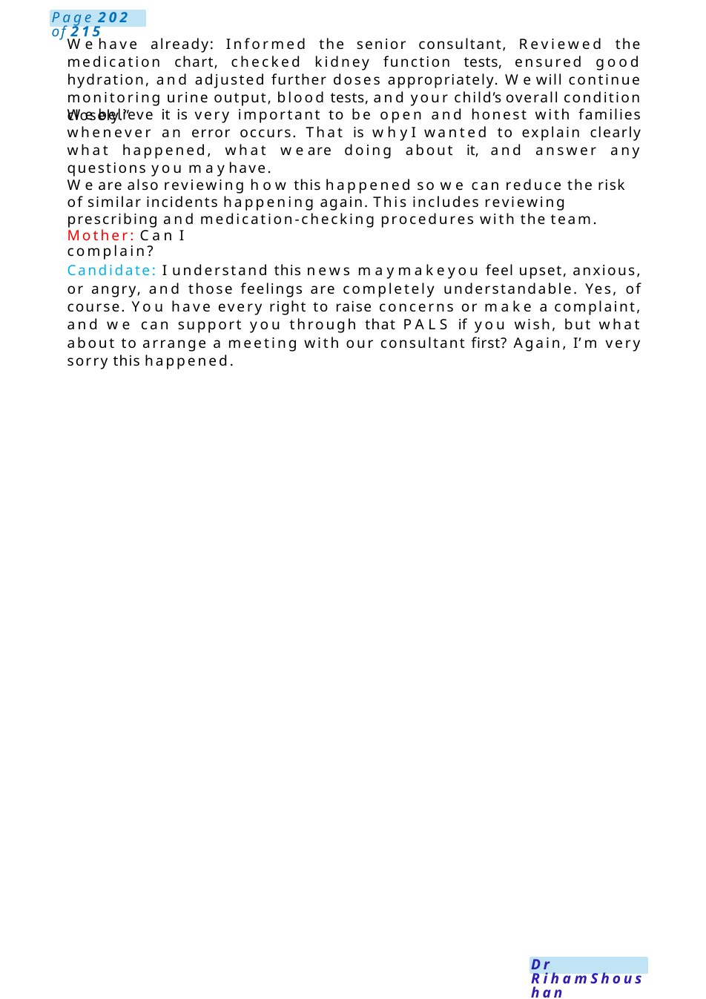
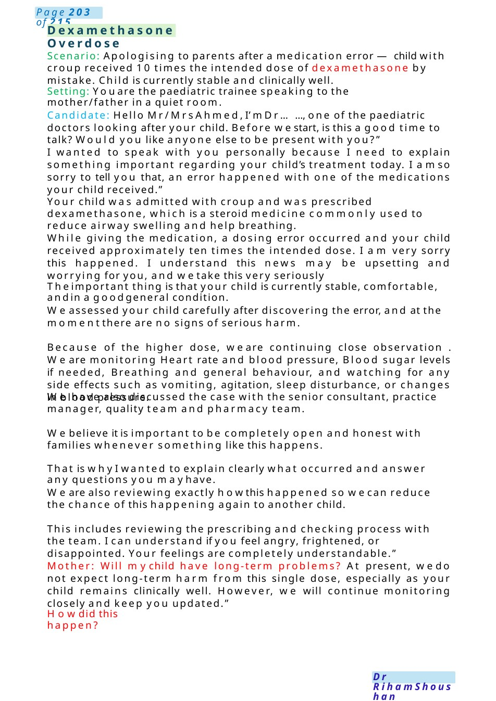

Apology Acyclovir Overdose
Scenario: Apologising to parents after an extra dose of acyclovir wasgiven by mistake to a child with renal impairment. Setting: Youare the pediatric trainee speaking with the parent in a quiet room.
Scenario Summary
Scenario: Apologising to parents after an extra dose of acyclovir wasgiven by mistake to a child with renal impairment. Setting: Youare the pediatric trainee speaking with the parent in a quiet room.
Full Original Scenario

Apology Acyclovir Overdose
Scenario: Apologising to parents after an extra dose of acyclovir wasgiven by mistake to a child with renal impairment.
Setting: Youare the pediatric trainee speaking with the parent in a quiet room.
Candidate: Hello Mr/Mrs Ahmed,I’m Dr......, one of the doctors caring for your child. Is this a good time to talk? Would you like another family memberor support person with you?
I wanted to speak with you because I need to explain something important regarding your child’streatment. there has been a medication error involving your child’s acyclovir treatment.
Mother: Howdid this happen
Candidate: We are carefully reviewing the sequence of events to understand exactly how the extra dose was given. Medication errors can happen due to human or system factors as the process for giving a child medicine happened through series of events, someonewrite the medicine dosage, others prepare and another one give the medicine. We already started our investigations, informed our practice manager and quality team. also, an incident report has been started. and it is important we learn from them properly.
Mother: What is this, Medicine?
Candidate: Acyclovir is medicine we are using to treat viral infection. Your child has underlying kidney problems, so the dose should be carefully adjusted according to kidney function. I amso sorry to tell you that, an additional dose was given by mistake. I amvery sorry this happened.
I understand this maybe worrying for you, especially because of your child’s kidney condition, and wetake this situation extremely seriously.”
Thereassuring thing is that your child is currently stable and in a goodgeneral condition. Weassessed your child immediately after identifying the error, and at the moment there are no signs of serious complication
Mother: Will this damage the kidneys permanently?
Candidate: With acyclovir, especially in children with reduced kidney function, extra doses can sometimes increase the risk of: Worsening kidney function, Changes in urine output Or occasionally side effects such as drowsiness, irritability, confusion, or vomiting.
At the moment, we do not have signs of permanent damage, and many children recover well after prompt monitoring and management. However, because your child already has kidney problems, we are being extra cautious and monitoring very closely. The good news is your child is not showing concerning symptoms, but wewant to continue close monitoring.
Mother: What happens next?
Candidate: Wewill continue observation, repeat blood tests if need, and keep you updated regularly. If there are any changes in your child’s condition, wewill act immediately.

Wehave already: Informed the senior consultant, Reviewed the medication chart, checked kidney function tests, ensured good hydration, and adjusted further doses appropriately. Wewill continue monitoring urine output, blood tests, and your child’s overall condition closely.”
Webelieve it is very important to be open and honest with families whenever an error occurs. That is whyI wanted to explain clearly what happened, what we are doing about it, and answer any questions you mayhave.
We are also reviewing how this happened so we can reduce the risk of similar incidents happening again. This includes reviewing prescribing and medication-checking procedures with the team.
Mother: Can I complain?
Candidate: I understand this news maymakeyou feel upset, anxious, or angry, and those feelings are completely understandable. Yes, of course. You have every right to raise concerns or make a complaint, and we can support you through that PALS if you wish, but what about to arrange a meeting with our consultant first? Again, I’m very sorry this happened.

Dexamethasone Overdose
Scenario: Apologising to parents after a medication error —child with croup received 10 times the intended dose of dexamethasone by mistake. Child is currently stable and clinically well.
Setting: Youare the paediatric trainee speaking to the mother/father in a quiet room.
Candidate: Hello Mr/Mrs Ahmed,I’m Dr......, one of the paediatric doctors looking after your child. Before westart, is this a good time to talk? Would you like anyone else to be present with you?”
I wanted to speak with you personally because I need to explain something important regarding your child’s treatment today. I amso sorry to tell you that, an error happened with one of the medications your child received.”
Your child was admitted with croup and was prescribed dexamethasone, which is a steroid medicine commonly used to reduce airway swelling and help breathing.
While giving the medication, a dosing error occurred and your child received approximately ten times the intended dose. I am very sorry this happened. I understand this news may be upsetting and worrying for you, and wetake this very seriously
Theimportant thing is that your child is currently stable, comfortable, andin a goodgeneral condition.
Weassessed your child carefully after discovering the error, and at the momentthere are no signs of serious harm.
Because of the higher dose, we are continuing close observation . We are monitoring Heart rate and blood pressure, Blood sugar levels if needed, Breathing and general behaviour, and watching for any side effects such as vomiting, agitation, sleep disturbance, or changes in blood pressure.
We have also discussed the case with the senior consultant, practice manager, quality team and pharmacy team.
Webelieve it is important to be completely open and honest with families whenever something like this happens.
That is whyI wanted to explain clearly what occurred and answer any questions you mayhave.
We are also reviewing exactly howthis happened so wecan reduce the chance of this happening again to another child.
This includes reviewing the prescribing and checking process with the team. I can understand if you feel angry, frightened, or disappointed. Your feelings are completely understandable.”
Mother: Will mychild have long-term problems? At present, wedo not expect long-term harm from this single dose, especially as your child remains clinically well. However, we will continue monitoring closely and keep you updated.”
Howdid this happen?